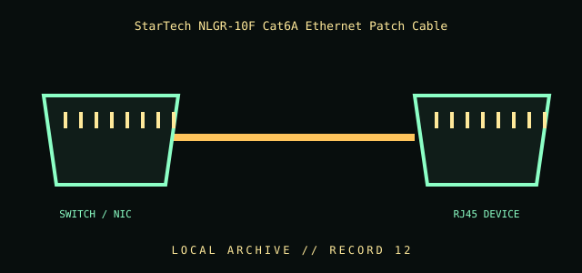

[ INDIVIDUAL COMPONENT // CABLES & ADAPTERS ]
StarTech NLGR-10F Cat6A Ethernet Patch Cable
A shielded Cat6A twisted-pair patch lead with RJ45 connectors for Ethernet links. The connected ports, channel installation, and PoE equipment determine the negotiated data rate and power delivery.

IDENTIFICATION / SAFETY: Match the complete part number, connector direction, host requirements, and revision to manufacturer documentation. A matching connector shape is not proof of protocol or electrical compatibility.
Specifications
| Catalog subcategory | Network and fiber cables |
|---|---|
| Catalog identity | StarTech.com NLGR-10F-CAT6A-PATCH 10 ft Cat6A Ethernet patch cable |
| Protocol / standard | StarTech model NLGR-10F-CAT6A-PATCH; 10 ft; manufacturer lists 500 MHz, 10GbE, S/FTP, and support for IEEE 802.3bt Type 4 PoE++ up to 100 W. Performance depends on the complete compliant channel and equipment. |
| Connector ends | SWITCH / NIC → RJ45 DEVICE; direction and gender are specified where the manufacturer source verifies them. |
Compatibility & electrical hazards
Use with compatible 8P8C modular Ethernet ports and a Cat6A-compliant channel. Do not exceed the cable/product rating or infer PoE safety from connector fit. Maintain manufacturer bend radius and avoid crushing or tight bundling, especially under PoE load.
Archival & handling notes
Retain the product label and verify the actual cable marking; document length and category. Inspect sheath, latch, and strain relief. Do not use a damaged lead for high-power PoE.
For collection records, photograph both connector faces and all labels; record manufacturer, complete SKU, revision, provenance, condition, and the source document used for identification. Do not apply power to an unidentified or damaged cable.
Sources & further reading
- StarTech — NLGR-10F Cat6A shielded patch cableManufacturer specifications for length, bandwidth, Ethernet, construction, and PoE rating.
- IEEE 802.3 Ethernet working groupPrimary standardization reference for Ethernet and PoE revisions.
Source values are limited to the linked manufacturer or standards documentation. Features not stated there are intentionally left unspecified; confirm the exact cable revision and host-device manuals before use.